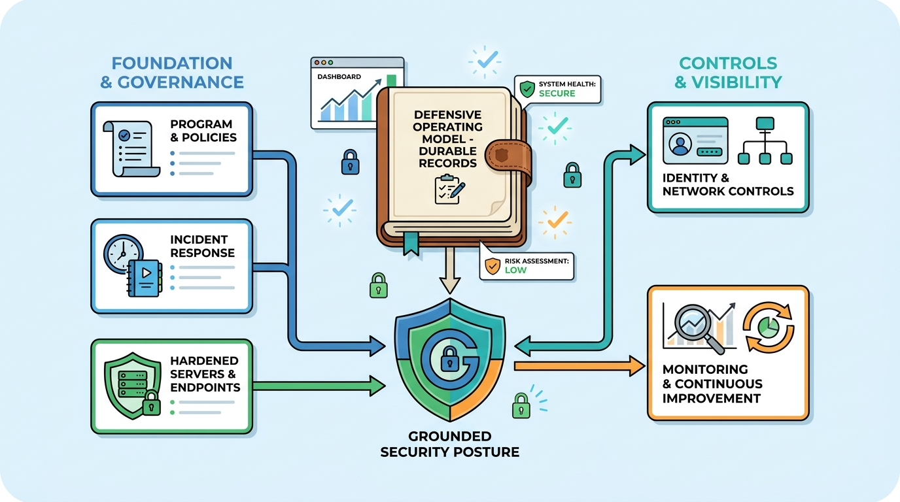

Image generated by Google Gemini (gemini-3-pro-image-preview)
Grounded Security
Željko Obrenović's defensive-security operating model, written as records — how a security program is created and governed, how incidents, disasters, and phishing are handled, how the estate is hardened from physical access to cloud, how identity and the network are controlled, and how the organization detects, tests, and improves. Each record ships its working checklist. Informed by practice and by Lee Brotherston, Amanda Berlin, and William F. Reyor III's "Defensive Security Handbook".
No posts match your search.